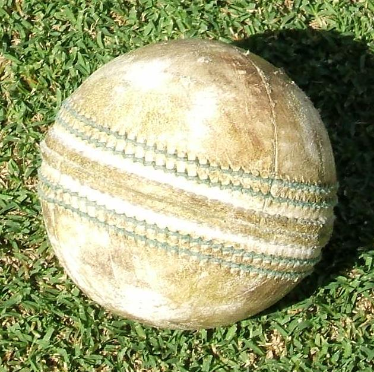
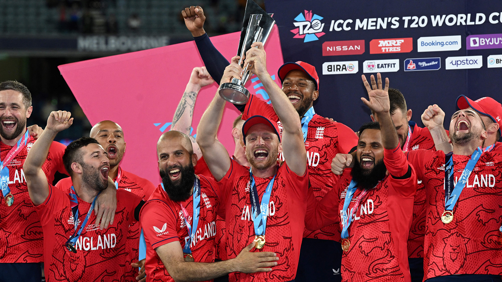
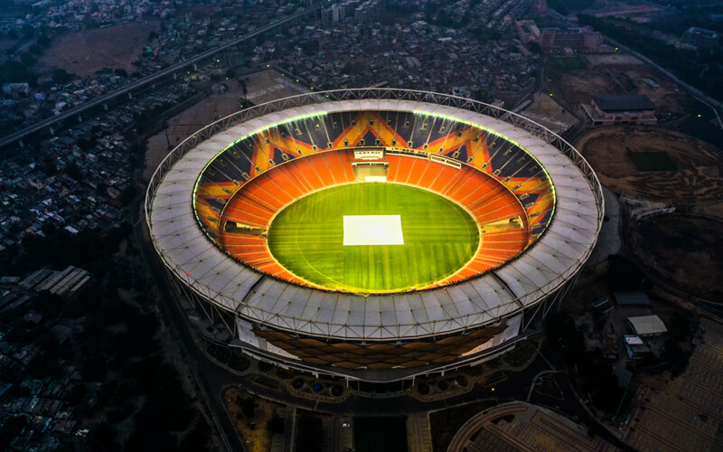

Most Wicket taker in ODI-M. Muralitharan
The First English Team To Tour Overseas
The Most Run Scorer in ODI-Mithali Raj
Test Cricket Ball

Limited Overs Cricket Ball
The team first won the County Championship
Most ODI World Cups Winner Team-Australia

Umpire

The Most Run Scorer in ODI-Sachin Tendulkar
Evolution of the cricket bat
A Typical Cricket Field.
ICC Cricket World Cup Winners 2019
Asia Cup Winners 2022

T20 World Cup Winners 2022
Members of ICC

The Narendra Modi Stadium
The King of Yorkers-Lasith Malinga
The King of Cricket-Virat Kohli